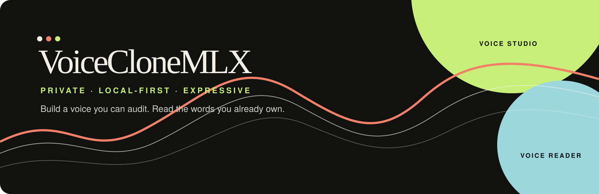

VoiceCloneMLX

A private, local-first voice laboratory for turning your own words into a reusable speaking voice.
VoiceCloneMLX is a two-app macOS workspace: Voice Studio prepares a clean, expressive voice dataset, and Voice Reader turns reviewed writing into audio through a versioned voice-model bundle.
Explore the project page · Read the rendered procedure · Open the rendered 30-minute script
Important
Honest status: the application seams, manifests, safety gates, tests, and macOS launchers are in place. The real provider installation, trained-model conversion, and audible trained-model round trip still require a deliberate local verification. The current Reader composition root intentionally keeps a silent placeholder runtime disabled as a model, so silence is never presented as a cloned voice.
At a glance
| Platform | Apple Silicon macOS · source-first .app
launchers |
| Privacy | Local by default; no silent uploads or implicit model downloads |
| Pipeline | Record → transcribe → reject overlap → align → train → read |
| Model handoff | Immutable, checksummed voice bundles with explicit runtime IDs |
| Project shape | Two independently deletable apps with provider-neutral contracts |
What it is
VoiceCloneMLX is a personal, non-commercial tool for two connected jobs:
| Voice Studio | Voice Reader |
|---|---|
| Turn a prepared script or an all-day recording into reviewed, single-speaker training data. | Turn your .txt, .docx, text-based
.pdf, or authorized website material into narrated
audio. |
| Use local MLX Whisper resources to transcribe and time-align speech. | Load a selected, verified voice bundle independently of the training app. |
| Reject a whole clip when another voice overlaps you, rather than quietly keeping contaminated audio. | Generate resumable chunks, preserve provenance, and export WAV or MP3 audio. |
| Keep styles such as neutral, warm, energetic, serious, somber, questioning, emphasis, and dialogue attached to the data. | Choose among your own or other consented voice bundles when compatible runtimes exist. |
The durable asset is the dataset: lossless recordings, exact transcripts, style labels, rejection evidence, checksums, and session provenance. Models can change; a carefully curated corpus remains useful.
What it is not
- It is not a hosted voice service.
- It does not silently upload private recordings, writing, or model weights.
- It does not call a reference-audio demo or a silent placeholder a trained personal model.
- It does not accept mixed-speaker clips for training. If another person talks over you at any point, the complete clip is rejected.
- It does not train a modern speech foundation model from random initialization. The intended path is fine-tuning a compatible pretrained model, with the exact model, revision, license, and runtime recorded in the bundle.
The workflow
your writing or conversation
│
▼
Voice Studio
record → transcribe → reject overlap
→ align → review → dataset
│
▼
versioned voice bundle
│
▼
Voice Reader
import text → review → synthesize
→ cache chunks → export audio1. Prepare and record
Start with the rendered 30-minute recording script or open its Markdown source. It uses two short sessions, calibration passages, room tone, style markers, and coverage for numbers, dates, dialogue, punctuation, technical language, and difficult sounds. A curated script is better for the first model than unstructured speech because every accepted clip has known text and deliberate delivery metadata.
You can add all-day natural speech later. The free-speech pipeline transcribes it with your local MLX Whisper installation and admits only segments that pass speaker verification, overlap rejection, audio checks, and human review.
2. Build the dataset
The Studio pipeline preserves the master recording, extracts a local transcription, finds style markers such as “This is the warm reading,” aligns the known text, and emits sentence-level WAV clips with JSONL metadata. Every row carries the text, style, timestamps, source session, and provenance needed to audit or reproduce it.
3. Train or convert a model
The training boundary is provider-neutral. The current research points to an MLX-compatible Qwen3-TTS path as the leading candidate, but the repository does not claim that a real Qwen model has passed the final listen test yet. A future provider task must:
- run a tiny, bounded smoke test with the exact pinned revision;
- train or fine-tune on an approved, split dataset;
- evaluate held-out prompts against a zero-shot baseline;
- preserve the source checkpoint and conversion provenance;
- convert to a local runtime only after the source model passes; and
- publish an immutable bundle with checksums and license metadata.
Remote GPU use is optional. Free notebook sessions are treated as resumable, opportunistic workers; paid GPU use requires a hard cost cap, checkpoint plan, automatic shutdown, and explicit approval.
4. Read with your voice
Voice Reader accepts owned or authorized .txt,
.docx, text-based .pdf, and website
material. It keeps extraction separate from synthesis so the
imported text can be reviewed before any audio is generated. A
verified model bundle is selected explicitly; the Reader never
guesses a compatible runtime.
What the first successful session will look like
- Open Voice Studio and load the prepared script.
- Record the two short pilot sessions with the same microphone position and room setup.
- Let local transcription and overlap checks produce a review queue.
- Keep only clean, owner-verified takes and inspect the generated manifest.
- Run the bounded model smoke test before committing to a full training job.
- Open Voice Reader, import a small text sample, select the verified bundle, and generate one WAV or MP3 file.
The last step is deliberately gated. Until a human has listened to real output, the runtime remains unverified and the Reader must not imply that it is your voice.
Run it locally
The project is currently a source workspace with thin
.app launchers. The launchers point back to the
repository's src/ directory; they do not bundle a
Python interpreter, model weights, or a dependency environment.
Requirements
- Apple Silicon macOS is the primary target.
- Python 3.10+ is recommended for the current source modules.
- Tkinter is needed for the desktop windows.
- Optional importers use
python-docxfor Word files andpypdffor text PDFs. - MLX Whisper and a real TTS runtime are installed separately and remain opt-in. No model is downloaded implicitly.
Launch from source
cd /Users/appleadmin/Apps/VoiceCloneMLX
PYTHONPATH=src python3 -m voiceclonemlx.studio_app
PYTHONPATH=src python3 -m voiceclonemlx.reader_appBuild the two macOS app launchers
python3 scripts/build_apps.py
open "apps/Voice Studio.app"
open "apps/Voice Reader.app"The build refuses to overwrite an existing bundle by default. Use
--replace only after checking the target is one of this
project's own bundles and keeping a rollback copy.
Run the checks
PYTHONPATH=src python3 -m pytest -q
python3 /Users/appleadmin/.codex/skills/icm-check/scripts/icm_check.py .
git diff --checkThe ICM check audits the workspace structure: each module has a defined job, inputs, outputs, boundaries, and deletion-safe seams. It is not a substitute for listening to generated speech.
Voice Reader accepts an output filename ending in
.wav or .mp3. WAV is the lossless runtime
output. MP3 is encoded locally from that WAV using the first
available encoder in this order: LAME, ffmpeg, then macOS
afconvert. No codec is downloaded automatically.
Command reference
| Goal | Command |
|---|---|
| Launch Voice Studio | PYTHONPATH=src python3 -m voiceclonemlx.studio_app |
| Launch Voice Reader | PYTHONPATH=src python3 -m voiceclonemlx.reader_app |
| Build both launchers | python3 scripts/build_apps.py |
| Run the Reader tests | PYTHONPATH=src python3 -m pytest -q tests/voice_reader/ |
| Run the full test suite | PYTHONPATH=src python3 -m pytest -q |
| Audit ICM structure | python3 /Users/appleadmin/.codex/skills/icm-check/scripts/icm_check.py . |
Repository map
src/voiceclonemlx/
├── recording/ capture and script storage
├── ingestion/ TXT, DOCX, PDF, and web extraction
├── alignment/ Whisper plans, markers, timestamps, overlap gates
├── dataset/ clip probes, rows, and split planning
├── training/ cost preflight, commands, evaluation, conversion
├── synthesis/ runtime adapters, readiness, and MLX bundle loading
├── studio_app/ Voice Studio composition and UI
├── reader_app/ Voice Reader composition and UI
└── shared/ versioned provider-neutral contracts
data/scripts/ teleprompters and script handoffs
docs/ procedures, architecture, research, and this page
scripts/ bounded packaging commands
tests/ focused contract and security tests
apps/ generated macOS .app launchersSafety and privacy rules
The repository treats a voice as sensitive personal data.
- Process locally by default. Do not upload private material without an explicit provider choice.
- Keep API, browser, GPU, and local-bus work one request at a time unless a measured, documented limit allows more.
- Cache and checkpoint external work; stop on rate limits, quota, auth, abuse, or repeated errors.
- Do not train on another person's voice without consent.
- Retain the original masters and rejection log; derived clips are not a replacement for the source recording.
- Require human listening before a runtime is marked verified.
See OPERATIONS.md, REPORTING.md, and the voice-model lifecycle contract for the full rules.
Versioning
Software and voice bundles use separate Semantic Versioning histories.
PATCH(0.x.1) fixes behavior without changing a public seam.MINOR(0.1.x) adds an optional, compatible capability.MAJOR(1.0.0) changes a required schema, runtime contract, artifact layout, or app boundary and requires a migration note.
Read VERSIONING.md before changing a module. Never rewrite a previous model bundle in place; publish a new immutable version.
Contributing to this personal workspace
Keep changes small enough to delete independently. Start
read-only, identify the exact seam, write tests before
implementation, and request an exact scoped
APPROVED WRITE before editing. Run the focused tests
while developing, then the full suite and ICM check at a substantial
milestone. Never burst Git or external services.
License and voice rights
This repository is a personal, non-commercial utility. Code and model licenses remain separate: record the exact license and revision for every base model, checkpoint, dataset, and converter. Only use your own voice or a voice for which you have explicit permission. This project is not legal advice.